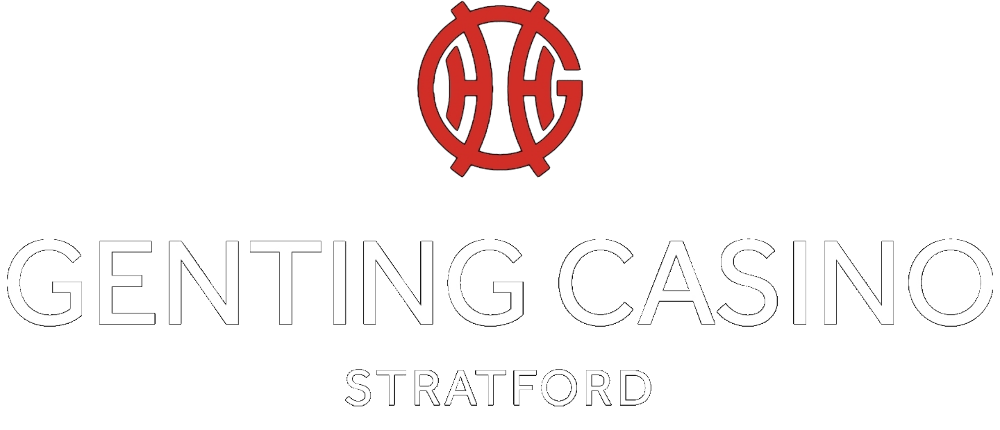

GENTING POKER
One tournament.One leaderboard.
Upload your Excel files, review the qualifiers and export one JPEG.
Designed by Adrian
1. Upload files
Add Entries and Re-Entries files from any flight. Supported formats: .xls and .xlsx.
Having trouble uploading?
Choose .xls or .xlsx documents from Files / My Files → Downloads, not Photos / Gallery. Save Excel attachments to this phone first; files on your computer are not copied to your phone automatically.
If only photos are shown, use Browse / Files in the picker. For WhatsApp, email or OneDrive files, download the original Excel attachment first. If this browser blocks file selection, open the app in Chrome.
If the button cannot open Chrome, copy this link into Chrome: https://genting-poker-manager-rebuilt.yellowember2.chatgpt.site/. Files stay in the browser where you imported them; import them again after switching browsers.
UPLOADED FILES0 files · 0 qualified playersSTAFF ONLY
Use the same button to add more files. Replace or remove any file below.
Session backup
Save or restore this session on another device. Backups contain original player data. Keep the backup private; it is not uploaded to a server.
Qualified from: —
Upload files to get started.
Potential duplicates — staff review
2. Review leaderboard
Staff view — full names and nationalities. JPEG names follow consent settings.
| 0 | ||||
| RANK | PLAYER NAME | NATIONALITY | QUALIFIED FROM | CHIP COUNT |
|---|
In the JPEG, only GDPR = Y or YES allows a full name. All other values use initials.
3. Export JPEG
Initials are pseudonymised data, not guaranteed anonymous. Files are processed and stored only in this browser.
More save options
If downloading does not start, open the image and touch and hold it to save.
If this browser blocks saving, open the app in Chrome. After switching browsers, import your Excel files and generate the JPEG again.